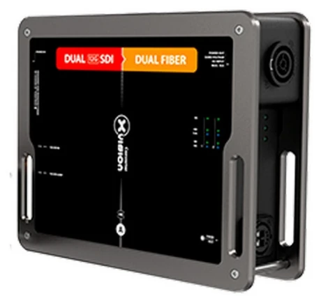

光の種類を合わせる
シングルモードかマルチモードか、opticalCON DUO か QUAD かは型式の末尾で決まります。受信機と同じ組み合わせにします。
映像をつなぐ・整える ↗EQUIPMENT
12G-SDI→光 送信機
2系統の 4K 映像を、光で遠くへ送り出す。
KEY SPECIFICATIONS

画像を大きく見る ＋01 / ROLE & FLOW
実際の構成は案件に合わせて決めます。
02 / BEFORE YOUR BRIEF
シングルモードかマルチモードか、opticalCON DUO か QUAD かは型式の末尾で決まります。受信機と同じ組み合わせにします。
12G/6G/3G-SDI(Level A・B)・HD-SDI・SD-SDI と埋め込み音声に対応。送る映像の形式を先に確認します。
電源は PowerCON TRUE1(AC100〜240V)。隣の機器へ電源を渡すスルー出力と、最大10Aのコンセント出力があります。
03 / CHOOSING THE RIGHT TOOL
映像卓から遠い LED のプロセッサーやスクリーン脇まで、4K の映像を2系統まとめて送りたい現場に。受信機 XVV2FIBER2SDI-12G と組で使います。
1系統で足りるか、2系統必要か。メインと予備を同時に送るなら2系統の本機が向いています。ラックでまとめるなら可逆モジュール版もあります。
xVision シリーズの送信機。ボタンやメニューのない差し込むだけの設計で、SDI のスルー出力は整形・増幅されています。状態表示の LED、マグネットでの積み重ね、滑り止め、C クランプ・壁付けなどの取付けに対応。標準的な SDI 光伝送(SFP)機器との互換をうたっています。カナダで設計・組み立て。
出典：Theatrixx 仕様書(XVV2SDI2FIBER-12G) ↗（2026年11月9日照合）
日程・台数、設置場所と搬入経路、電源、担当範囲をお聞かせください。本体・周辺機材・搬入出・設営・本番操作・撤去を分けて、必要な範囲を整理します。